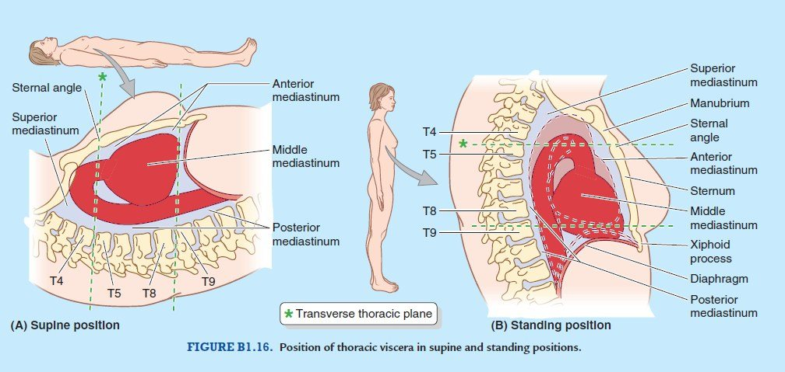
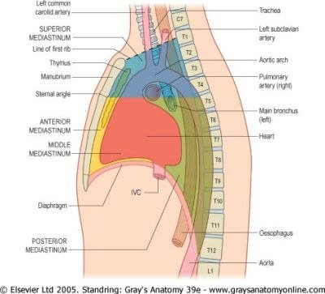
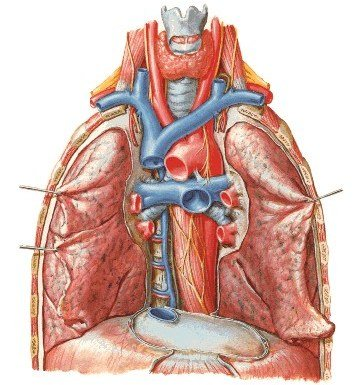
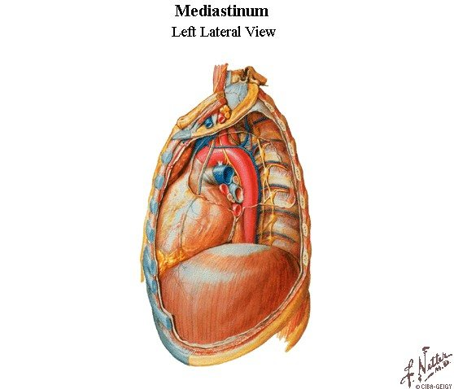
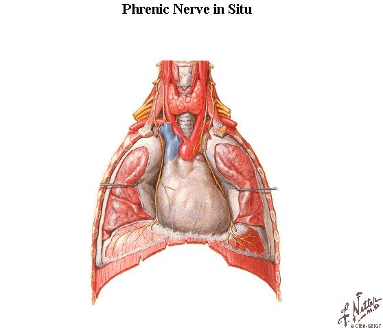
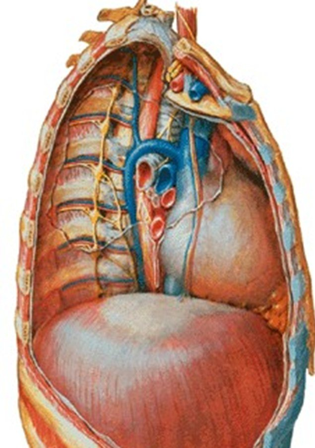
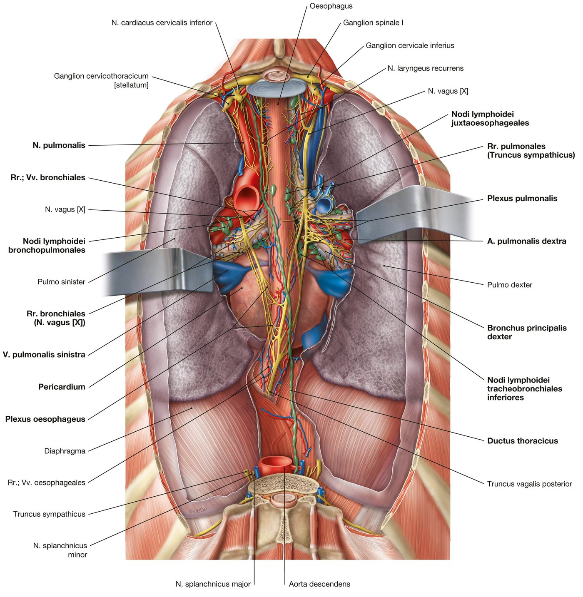

Bölüm 7 · Mediastinum
Mediastinum, iki akciğerin arasında kalan ve göğüsteki akciğer dışı bütün organları taşıyan dar bir koridordur: kalp ve büyük damarlar, soluk borusu ve yemek borusu, sinirler, timus, ductus thoracicus ve lenf düğümleri. Bu bölüm koridoru önce bütün olarak tanımlar, sonra angulus sterni düzlemiyle bölümlere ayırır ve her bölümün içeriğini, yapıların birbirine göre dizilişini ve bu dizilişin klinik sonuçlarını anlatır.
Sunumun tanımıyla mediastinum, göğüs boşluğunun santral kompartımanıdır ve apertura thoracis superior ile diyafram arasında uzanır. Sınırları:
Mediastinumdaki organlar gevşek bağ dokusu ve yağ içine gömülüdür ve bu bağ dokusu yukarıda boyun fasyalarının arasındaki aralıklarla devamlıdır. Bunun iki önemli klinik sonucu vardır: boyundaki bir enfeksiyon (örneğin derin boyun apsesi) fasya aralıkları boyunca mediastene inebilir (inen nekrotizan mediastinit); mediastende ortaya çıkan hava (özofagus ya da trakea yırtılması, alveol rüptürü) yukarı boyna yayılarak deri altında çıtırtı veren amfizem oluşturur.
Hareketli bir bölge. Sunum mediastinumun yaşayan insanda oldukça mobil bir bölge olduğunu vurgular ve hareketin kaynaklarını sayar: diyaframın, göğüs duvarının ve trakeobronşiyal ağacın solunum sırasındaki hareketleri, büyük arterlerin nabız atımları, akciğerlerin ve kalbin hareketi, hacim ve basınç değişiklikleri. Kitaplarda verilen düzeyler (örneğin karina ve arcus aortae için T4-T5) kadavra ya da sırtüstü yatan kişi içindir. Ayakta duran canlıda mediastinal organlar yerçekimiyle aşağı iner (Şekil 7.1): arcus aortae, karina ve kalp yaklaşık bir vertebra düzeyi aşağıda bulunabilir, centrum tendineum xiphoid'in ortası hizasına iner. Derin inspirasyonda karina T6'ya kadar inebilir.

Mediastinal kayma. Mediastinum iki basınç odasının (iki plevral boşluk) arasındaki hareketli bir duvar gibi davranır. Bir tarafta hacim kaybı olursa (lob ya da akciğer atelektazisi, pnömonektomi) mediasten o tarafa çekilir. Bir tarafta yer kaplayan bir süreç olursa (tansiyon pnömotoraks, büyük efüzyon, büyük kitle) karşı tarafa itilir. Kaymanın yönü fizik muayenede trakeanın yerinden, grafide trakea ve kalp gölgesinin konumundan anlaşılır ve tanının yarısını söyler.
Sunuma göre angulus sterni'den T4-T5 vertebralar arasındaki discus intervertebralis'e uzanan hayali transvers bir düzlem mediastinumu mediastinum superius ve mediastinum inferius olarak ikiye ayırır. Mediastinum inferius fibröz perikard aracılığıyla üç bölüme ayrılır: perikardın önündeki mediastinum anterius, perikardın kendisi ve içeriği olan mediastinum medium ve perikardın arkasındaki mediastinum posterius (Şekil 7.2 ve 7.3).

Angulus sterni düzleminde neler olur? Bu düzlem yalnızca bir sınır değil, göğüs anatomisinin en yoğun "kavşağıdır". Tablo 7.1 bu düzeyde gerçekleşen olayları toplar. Hepsi aynı düzlemde olduğu için tek bir yüzey işaretinden (angulus sterni) göğsün derinliğindeki birçok yapının yeri tahmin edilebilir.
| Olay | Açıklama |
|---|---|
| 2. kaburga kıkırdağı | Sternuma bu hizada bağlanır; kaburgalar buradan sayılır. |
| Arcus aortae başlar ve biter | Sağ 2. sternokostal eklemin arkasında başlar, T4'ün sol yanında aorta descendens olarak devam eder. |
| Trakea ikiye ayrılır | Karina (kadavrada ve sırtüstü yatanda). |
| V. azygos VCS'ye açılır | Sağ akciğer kökünün üzerinden kemer yaparak. |
| Truncus pulmonalis ikiye ayrılır | Düzlemin hemen altında, arcus aortae'nın içbükeyliğinde; lig. arteriosum ve sol n. laryngeus recurrens'in kancası buradadır. |
| Ductus thoracicus sağdan sola geçer | T4-T6 arasında (yaklaşık T5). |
| Plevranın ön kenarları birleşir | Sağ ve sol plevra sternumun arkasında orta hatta yaklaşır. |
| Kardiyak pleksus | Derin kısmı trakeanın ikiye ayrılma yerinin önündedir. |
Tablo 7.1 — Angulus sterni (T4-T5) düzleminin yapıları.
Üst mediastinum yukarıda apertura thoracis superior, aşağıda transvers torasik düzlem, önde manubrium, arkada T1-T4 vertebra gövdeleri ve yanlarda mediastinal plevra ile sınırlanır. Sunum içeriğini üç slayta yayar. Bu yapıların önden arkaya katmanlar hâlinde dizildiğini bilmek hem ezberi kolaylaştırır hem de bir kitlenin ya da yaralanmanın hangi yapıları tutacağını tahmin ettirir (Şekil 7.4).
Sunumun saydığı içerik:
Timus, T lenfositlerin olgunlaştığı lenfoid organdır. Manubriumun arkasında, büyük venlerin önünde yer alır. Çocuklukta büyüktür ve aşağıda ön mediastene, yukarıda boyna uzanabilir. Vücut ağırlığına oranla en büyük olduğu dönem doğum, mutlak olarak en ağır olduğu dönem ergenliktir. Ergenlikten sonra bezin dokusu giderek yağ dokusuyla yer değiştirir (involüsyon). Sunumun "timus kalıntıları" ifadesi erişkindeki bu yağlı kalıntıyı anlatır. Arterleri a. thoracica interna'nın dallarıdır, venleri sol v. brachiocephalica'ya ve v. thoracica interna'ya açılır. Klinik açıdan en önemli tümörü timomadır ve ön mediastenin en sık kitlelerinden biridir. Timoma hastalarının önemli bir kısmında myasthenia gravis görülür (yaklaşık üçte birinden yarısına kadar). Myasthenia gravis'li hastaların bir kısmında da timoma bulunur ve tedavide timektomi yer alır.
Her iki yanda v. jugularis interna ile v. subclavia sternoklaviküler eklemin arkasında birleşerek v. brachiocephalica'yı oluşturur. Birleşme yerine venöz açı denir; solda ductus thoracicus, sağda ductus lymphaticus dexter buraya açılır. Sol v. brachiocephalica yaklaşık 6 cm uzunluğundadır: manubriumun arkasından, arcus aortae'nın üç dalının önünden eğik olarak sağa geçer. Bu uzun ve yüzeyel seyir onu sternum kırıklarında ve sternotomide yaralanmaya açık kılar; küçük çocuklarda incisura jugularis'in üstüne taşabilir ve trakeostomide dikkat ister. Sağ v. brachiocephalica yaklaşık 2,5 cm uzunluğunda ve dikeydir. İki ven sağ 1. kaburga kıkırdağının alt kenarının arkasında birleşerek VCS'yi oluşturur. VCS yaklaşık 7 cm uzunluğundadır, sternumun sağ kenarının arkasında dik iner, 2. kıkırdak düzeyinde (T4) v. azygos'u alır ve 3. kıkırdak hizasında sağ atriyuma açılır. Sunumun belirttiği gibi VCS'nin üst yarısı mediastinum superius'ta, alt yarısı (perikardın içindeki kısmı) mediastinum medium'dadır.


VCS sendromu. VCS ince duvarlı, düşük basınçlı bir vendir ve çevresi sert yapılarla (sternum, trakea, sağ ana bronş, aorta) ve lenf düğümleriyle sarılıdır. Bu yüzden dışarıdan kolayca sıkışır. En sık neden akciğer kanseri (özellikle sağ üst lob ve küçük hücreli kanser) ve lenfomadır; damar içi kateterlere bağlı trombüs de giderek sık görülür. Baş, boyun ve kollardan kan dönemez: yüz ve boyun şişer, kızarır, kollarda ödem, baş ağrısı ve göğüs duvarında genişlemiş toplardamarlar görülür. Bu toplardamarlar, kanın VCİ sistemine ulaşmak için kullandığı kollateral yollardır: azygos sistemi, v. thoracica interna, göğüs ve karın duvarı venleri.
Arcus aortae aorta ascendens'in devamıdır. Angulus sterni düzleminde, sağ 2. sternokostal eklemin arkasında başlar; yukarı, arkaya ve sola doğru kıvrılarak önce trakeanın önünden, sonra solundan geçer; sağ pulmoner arterin ve sol ana bronşun üzerinden aşar ve T4'ün sol yanında, yine aynı düzlemde aorta descendens olarak devam eder. En yüksek noktası manubriumun ortası hizasındadır. Üç dalı vardır:
Dal düzeninde varyasyonlar sıktır: truncus brachiocephalicus ile sol a. carotis communis'in ortak bir gövdeden çıkması (kişilerin yaklaşık beşte birine kadar), sol a. vertebralis'in doğrudan arktan çıkması ve nadiren sağ a. subclavia'nın arkın son dalı olarak soldan çıkıp özofagusun arkasından sağa geçmesi (a. lusoria; özofagusu sıkıştırarak yutma güçlüğü yapabilir).
Arkın komşulukları. Sol yanını önden arkaya üç yapı çaprazlar: sol n. phrenicus (önde), v. intercostalis superior sinistra (ikisinin arasında, eğik olarak) ve sol n. vagus (arkada). Sağ yanında ve arkasında trakea, özofagus, sol n. laryngeus recurrens ve derin kardiyak pleksus bulunur. Altında truncus pulmonalis'in ikiye ayrılma yeri, lig. arteriosum, sol n. laryngeus recurrens'in kancası, sol ana bronş ve yüzeyel kardiyak pleksus vardır. Üstünden çıkan üç dalı önden sol v. brachiocephalica çaprazlar. Göğüs grafisinde arkın sol kenarı "aort topuzu" olarak görülür.
Klinik. Arkın genişlemesi (anevrizma) trakeayı ve sol n. laryngeus recurrens'i sıkıştırarak ses kısıklığına, her kalp atımında trakeanın aşağı çekilmesine (trakeal çekilme) yol açabilir. Ani yavaşlama travmalarında (trafik kazası, yüksekten düşme) aorta en sık lig. arteriosum'un tutunduğu yerde, sol a. subclavia çıkışının hemen distalinde (istmus) yırtılır. Nedeni, görece hareketli arkın, omurgaya bağlı sabit inen aortaya bu noktada katılmasıdır: gövde aniden durduğunda ark ve kalp öne doğru hareket etmeye devam eder ve gerilim sabit noktada toplanır. Grafide mediastenin genişlemesi bu yaralanmanın uyarıcı bulgusudur. Aort koarktasyonu da aynı bölgede bulunur (Bölüm 3.5).
İki n. vagus mediastene farklı yollardan girer, ama aynı kuralı izler: akciğer kökünün arkasından geçer, pulmoner pleksusa katılır, sonra özofagusun çevresinde plexus oesophageus'u oluşturur (Bölüm 7.6).
Sol n. laryngeus recurrens'in bu uzun ve göğse inen yolu onu birçok göğüs hastalığına açık kılar. Sinir krikotiroid kas dışındaki bütün iç gırtlak kaslarını innerve ettiği için felci aynı taraf ses telini hareketsiz bırakır ve ses kısıklığı yapar. Göğüs içindeki nedenleri: sol hilusta ya da aortopulmoner pencerede (arcus aortae ile sol pulmoner arter arasındaki aralık) yerleşen akciğer kanseri ve lenf düğümü metastazları, arcus aortae anevrizması, mitral darlıkta genişleyen sol atriyum ve pulmoner arterin siniri sıkıştırması (Ortner sendromu), patent ductus arteriosus ameliyatı. Sağ sinir göğse inmediği için bu nedenlerden etkilenmez. Bu fark, "akciğer kanserli hastada ses kısıklığı" sorusunda sol tarafın neden önemli olduğunu açıklar.
İki n. phrenicus vagusların lateralinde ve önünde iner. Sağ n. phrenicus sağ v. brachiocephalica ve VCS'nin yan yüzünde, sol n. phrenicus a. carotis communis sinistra ile a. subclavia sinistra arasında iner ve arkın sol yanını vagusun önünden çaprazlar. Sonra iki sinir de akciğer kökünün önünden, perikard ile mediastinal plevra arasında, a. ve v. pericardiacophrenica ile birlikte diyaframa iner (Şekil 7.6; Bölüm 2.6). Sunuma göre nn. phrenici hem mediastinum superius'ta hem mediastinum medium'da bulunur.

Diğerleri. Trakea (Bölüm 5.3) ve özofagusun üst kısmı visseral katmanı oluşturur. Ductus thoracicus üst mediastende özofagusun sol kenarında yükselir (7.6). Paratrakeal ve trakeobronşiyal lenf düğümleri trakeanın iki yanında ve ikiye ayrılma yerinde dizilir (Bölüm 6.5). Sunumun saydığı kasların alt uçları, manubriumun arkasına tutunan m. sternohyoideus ve m. sternothyroideus ile üst torakal vertebraların önündeki m. longus colli'dir.
Sunuma göre mediastinum anterius fibröz perikard ile corpus sterni arasındadır ve mediastinumun en küçük bölümüdür. İçeriği:
Sunumda kırmızıyla vurgulanan üç içerik (timus kalıntıları, a. thoracica interna'nın mediastinal dalları ve lenf düğümleri), bu dar bölgede gelişebilecek hastalıkların da kaynağıdır. Ön mediastenin kitleleri klasik olarak "dört T" ile hatırlanır: timoma, teratom (germ hücreli tümörler), tiroid (retrosternal guatr; çoğu zaman üst ve ön mediastene uzanır) ve "terrible" lenfoma. Büyük bir ön mediastinal kitle genel anestezi sırasında hastayı tehlikeye atabilir: sırtüstü yatan ve kas tonusu kalkan hastada kitle arkasındaki trakeayı, kalbi ve büyük damarları sıkıştırabilir.
Sunuma göre mediastinum medium mediastinum inferius'un en geniş kısmıdır ve perikard ile mediastinum anterius'tan ayrılır. İçeriği iki slayta yayılır:

Perikard kalbi ve büyük damarların köklerini saran fibroseröz bir kesedir. İki katmanı vardır:
Sinüsler. Seröz perikardın büyük damarlar çevresindeki katlantıları iki sinüs bırakır. Sinus transversus pericardii arkada atriyumlar ve VCS, önde aorta ascendens ve truncus pulmonalis arasındaki tünel biçimli geçittir. Kalp cerrahisinde cerrah parmağını ya da bir bağı bu geçitten geçirerek aorta ve truncus pulmonalis'i birlikte kavrayabilir ve klempleyebilir. Sinus obliquus pericardii sol atriyumun arkasında, pulmoner venlerin ve VCİ'nin çevresindeki katlantıların sınırladığı, bir ucu kör bir ceptir.
Damarları ve sinirleri. Perikardın asıl arteri n. phrenicus'a eşlik eden a. pericardiacophrenica'dır; a. musculophrenica, bronşiyal, özofageal ve aa. phrenicae superiores de katkıda bulunur. Fibröz perikard ve parietal seröz yaprak n. phrenicus ile innerve edilir. Perikardit ağrısı bu yüzden keskindir, nefes almakla ve yatmakla artar, öne eğilince azalır ve boyna ve omuz başına (C3-C5) yansıyabilir. Visseral yaprak (epikard) ağrıya duyarsızdır.
Tamponad. Fibröz perikard esnemediği için perikard boşluğundaki sıvının ne kadar hızlı biriktiği, ne kadar biriktiğinden daha önemlidir. Aniden biriken 100-200 mL kan (kalp yaralanması, aort diseksiyonu, kalp rüptürü) kalbin diyastolde dolmasını engeller ve kalp debisini düşürür: hipotansiyon, boyun venlerinde dolgunluk ve uzaktan gelen kalp sesleri (Beck üçlüsü), inspirasyonda nabız basıncının belirgin düşmesi (paradoks nabız). Yavaş biriken bir efüzyonda ise perikard zamanla gerilir ve bir litreyi aşan sıvı bile tamponad yapmayabilir. Tedavi perikardiyosentezdir: iğne çoğu zaman ksifoid altından, sol omza doğru yönlendirilerek ilerletilir. Bu yol plevrayı ve akciğeri delmeden perikarda ulaşır (Bölüm 4.6'daki "çıplak alan"). Sternumun sol kenarına yakın yapılan girişimlerde a. thoracica interna'nın sternum kenarının 1-2 cm lateralinden indiği unutulmamalıdır.
Kalbin iç yapısı (boşluklar, kapaklar, iletim sistemi, koroner damarlar) dolaşım sistemi modülünde anlatılır. Göğüs anatomisi açısından bilinmesi gereken, kalbin göğüs içindeki konumu ve komşuluklarıdır. Kalp perikardın içinde, orta hattın üçte biri sağında, üçte ikisi solunda, eğik olarak durur. Tepesi (apex) sol 5. İKA'da, orta hattan yaklaşık 9 cm uzakta, midklaviküler çizginin hemen içindedir. Tabanı (basis cordis) arkaya bakar ve çoğunlukla sol atriyumdan oluşur. Ön (sternokostal) yüzünü büyük ölçüde sağ ventrikül, alt (diyafragmatik) yüzünü sol ve sağ ventriküller, sol (pulmoner) yüzünü sol ventrikül oluşturur. Sağ kenarı sağ atriyum, sol kenarı sol ventrikül, alt kenarı sağ ventriküldür. Bu dağılım göğüs grafisindeki kalp gölgesinin kenarlarını belirler (Bölüm 8.4).
Sol atriyum ve özofagus. Kalbin tabanındaki sol atriyumun hemen arkasında, aralarında yalnızca perikard ve sinus obliquus bulunacak şekilde özofagus iner. Bu komşuluğun üç sonucu vardır: (1) mitral darlıkta genişleyen sol atriyum özofagusu arkaya iter; baryumlu grafide özofagusta bir çentik görülür ve hasta yutma güçlüğü çekebilir; (2) transözofageal ekokardiyografide prob özofagusa yerleştirilerek sol atriyum ve mitral kapak çok yakından görüntülenir; (3) atriyal fibrilasyon ablasyonunda sol atriyumun arka duvarına uygulanan enerji özofagusa zarar verebilir.
Kardiyak pleksus. Kalbin sinirleri trakeanın ikiye ayrılma yerinin önündeki derin kardiyak pleksus ile arcus aortae'nın altındaki yüzeyel kardiyak pleksustan gelir. Sempatik lifler (T1-T4/5) kalp hızını ve kasılma gücünü artırır; parasempatik lifler (vagusun kardiyak dalları) kalp hızını azaltır. Kalbin ağrı lifleri sempatik yolla T1-T4 segmentlerine girer ve ağrı göğüs ön duvarına ve sol kolun iç yüzüne yansır (Bölüm 3.4).
Sunuma göre mediastinum posterius önde bifurcatio tracheae, pulmoner damarlar, perikard ve diyaframın üst-arka bölümü; arkada 4-12. torakal vertebralar; yanlarda mediastinal plevra ile sınırlanır. Mediastinum medium ile mediastinum posterius'u bifurcatio tracheae ile pulmoner damarlar ayırır. İçeriği (slayt 84):

Aorta thoracica T4'ün sol yanında arcus aortae'nın devamı olarak başlar, arka mediastende iner ve önce vertebra gövdelerinin solunda iken giderek orta hatta yaklaşır. T12 düzeyinde hiatus aorticus'tan geçerek karın aortası olur. Önünde sol akciğer kökü, perikard (sol atriyumun arkası) ve alt kısımda özofagus, sağında v. azygos ve ductus thoracicus, solunda sol mediastinal plevra ve akciğer bulunur. Dalları iki gruptur: visseral dallar (bronşiyal arterler, özofageal arterler, perikardiyal ve mediastinal dallar) ve parietal dallar (3-11. posterior interkostal arterler, a. subcostalis ve aa. phrenicae superiores). Aortanın bu bölgesindeki anevrizmalar ve diseksiyonlar sırta vuran ağrıyla belirti verir ve posterior interkostal arterlerden çıkan omurilik dallarını (Adamkiewicz arteri) tehlikeye atabilir.
Özofagus krikoid kıkırdağın alt kenarında (C6) farinksin devamı olarak başlar ve yaklaşık 25 cm uzunluğundadır. Göğse trakea ile omurga arasında, orta hattın hafif solunda girer. Üst mediastende trakeanın arkasında, alt mediastende sol ana bronşun ve perikardın (sol atriyumun) arkasında iner. Aşağıda sola ve öne kıvrılarak aorta descendens'in önünden geçer ve hiatus oesophageus'tan (T10) karına geçip mideye (kardiya, T11) açılır.
Özofagusun dört daralma yeri vardır. Bu yerler yutulan yabancı cisimlerin takıldığı, yakıcı maddelerin en ağır hasar yaptığı ve endoskopi sırasında dikkat edilmesi gereken noktalardır. Dördünün de nedeni anatomiktir: özofagus ya bir sfinkterden geçer ya da yanından geçen bir yapı tarafından bastırılır (Şekil 7.9).
Özofagusun göğüsteki kısmını aortanın özofageal dalları ve bronşiyal arterler besler. Venleri üst kısımda brakiyosefalik venlere, ortada azygos sistemine, alt kısımda hem azygos sistemine hem portal sistemin bir dalı olan v. gastrica sinistra'ya açılır. Bu alt bölge bir portosistemik anastomoz bölgesidir: portal hipertansiyonda kan karaciğeri atlamak için bu yolu kullanır, submukozal venler genişler ve kanamaya eğilimli özofagus varisleri oluşur. Özofagusun alt sol arka duvarı en zayıf yeridir; şiddetli kusma sırasında burada tam kat yırtılma (Boerhaave sendromu) olabilir ve içerik sol plevral boşluğa ve mediastene dökülür.
Akciğer köklerinin arkasından geçen iki vagus özofagusa ulaşır ve onun çevresinde lifleri birbirine karışan bir ağ (plexus oesophageus) oluşturur. Pleksusun alt ucunda lifler yeniden iki gövdede toplanır: truncus vagalis anterior (çoğunlukla sol vagus lifleri) ve truncus vagalis posterior (çoğunlukla sağ vagus lifleri). Sol vagusun öne, sağ vagusun arkaya geçmesi midenin gelişim sırasında kendi ekseni etrafında dönmesindendir. İki gövde özofagusla birlikte hiatus oesophageus'tan karına geçer (Bölüm 2.2).
Göğüsteki sempatik gövde (truncus sympathicus) kaburga başlarının ve vertebra gövdelerinin yan yüzünün önünde, kostal plevranın arkasında iner; arka mediastinumun yan sınırındadır. Her yanda 11-12 gangliyon taşır. En üstteki torakal gangliyon çoğu zaman alt servikal gangliyonla birleşerek ganglion cervicothoracicum (stellatum)'u oluşturur. Bu gangliyon 1. kaburganın boynunun önünde, cupula pleurae'nin hemen medialinde durur. Yaralanması ya da bir akciğer tepesi tümörüyle (Pancoast) tutulması aynı tarafta Horner sendromuna (ptozis, miyozis, yüzde terleme kaybı) yol açar. Lokal anestezikle bloke edilmesi (stellat gangliyon bloğu) kolun sempatik kaynaklı ağrılarında kullanılır.
Gangliyonlardan iki tür dal çıkar. Kardiyopulmoner splanknik sinirler (T1-T4/5 gangliyonlarından) postganglionik lifleri kalp, akciğer ve özofagus pleksuslarına taşır. Abdominopelvik splanknik sinirler ise gangliyonlarda sinaps yapmadan geçen preganglionik liflerden oluşur, krusları delerek karındaki prevertebral gangliyonlara iner: n. splanchnicus major (T5-T9), n. splanchnicus minor (T10-T11) ve n. splanchnicus imus (T12). Sunumdaki "splanknik sinirler" bu dallardır. Aşırı terlemenin cerrahi tedavisinde (torakal sempatektomi) üst torakal gangliyonlar kesilir.
Ductus thoracicus vücudun en büyük lenf damarıdır. Vücudun sağ üst çeyreği (başın ve boynun sağ yarısı, sağ kol ve göğsün sağ yarısı) dışındaki bütün lenfi taşır. Sağ üst çeyreğin lenfi ductus lymphaticus dexter ile sağ venöz açıya döner. Seyri (Şekil 7.10):
Şilotoraks. Kanal yaralandığında (özofagus ve akciğer cerrahisi, travma, lenfoma gibi tümörler) içindeki süt görünümündeki şilus plevral boşluğa dökülür. Şilotoraksın tarafını kanalın anatomisi belirler: kanal T5'in altında orta hattın sağında olduğu için bu düzeyin altındaki yaralanmalar sağ, üstündekiler sol şilotoraks yapar. Kanalın duvarı ince ve saydam olduğu için cerrahide kolay görülmez; aç bir hastada şilus berrak olduğundan yaralanma fark edilmeyebilir.
Arka mediastinal lenf düğümleri özofagusun ve aortanın çevresindedir. Özofagusun, perikardın arka kısmının ve diyaframın arka kısmının lenfini alır ve çoğunlukla ductus thoracicus'a drene olur.
Bazı yapılar bölümlerin sınırlarını aşarak iki bölümde birden bulunur. Sunum bu yapıları ayrı bir slaytta toplar ve bu liste soru yazmaya çok uygundur:
| Bölümler | Yapılar | Neden? |
|---|---|---|
| Superius + anterius | Timus bezi kalıntıları | Timus manubriumun arkasından aşağıya, perikardın önüne uzanır. |
| Superius + medium | Nn. phrenici; V. cava superior | VCS'nin üst yarısı perikardın dışında, alt yarısı içindedir. Frenik sinirler yukarıdan perikardın yanına iner. |
| Superius + posterius | Oesophagus; Ductus thoracicus; Nn. vagi | Üçü de boyundan karına kadar göğsün arka kısmını boydan boya geçer. |
| Medium + posterius | V. azygos | Gövdesi arka mediastende yükselir, terminal kısmı (kemeri ve VCS'ye açılan ucu) orta mediastendedir. |
Tablo 7.2 — Birden fazla mediastinal bölümde bulunan yapılar (slayt 87).
Slayt 87'nin dört sorusu ve cevapları: hem superius hem anterius → timus kalıntıları; hem superius hem medium → nn. phrenici ve VCS; hem superius hem posterius → özofagus, ductus thoracicus ve nn. vagi; hem medium hem posterius → v. azygos. Akılda tutmak için: "önden" geçen iki yapı (frenik ve VCS) orta mediastene, "arkadan" geçen üç yapı (vagus, özofagus, duktus) arka mediastene iner.
Bir mediastinal kitlenin hangi bölümde olduğu, onun ne olabileceğini büyük ölçüde belirler, çünkü her bölümün kitleleri o bölümün normal içeriğinden kaynaklanır (Tablo 7.3).
| Bölüm | Normal içerik | Sık görülen kitleler |
|---|---|---|
| Ön (ve ön-üst) | Timus, lenf düğümleri, yağ; tiroidin aşağı uzantısı | Timoma, teratom ve diğer germ hücreli tümörler, lenfoma, retrosternal guatr ("dört T") |
| Orta | Kalp, perikard, büyük damarlar, trakea ve bronşlar, lenf düğümleri | Lenfadenopati (lenfoma, sarkoidoz, tüberküloz, metastaz), bronkojenik ve perikard kistleri, aort arkı anevrizması |
| Arka | Özofagus, aorta, sinirler ve sempatik gövde, azygos sistemi, ductus thoracicus | Nörojenik tümörler (en sık arka mediastinal kitle; çocukta nöroblastom, erişkinde schwannom ve nörofibrom), özofagus tümörleri ve divertikülleri, hiatal herni, inen aort anevrizması, paravertebral apse |
Tablo 7.3 — Mediastinal kitlelerin bölümlere göre dağılımı.
Mediastinumun diğer önemli durumları şunlardır: mediastinit (özofagus yırtılması ya da boyun enfeksiyonunun inmesiyle gelişen ağır enfeksiyon), pnömomediastinum (hava kaçağı; boyunda deri altı amfizemi ve kalp sesleriyle eş zamanlı çıtırtı), mediastinal genişleme (travmada aort yaralanmasının uyarıcı bulgusu), VCS sendromu (7.3) ve mediastinal kayma (7.1).
Doğru: D. Sunuma göre hem üst hem arka mediastende bulunan yapılar özofagus, ductus thoracicus ve nn. vagi'dir; üçü de göğsün arka kısmını boydan boya geçer.
A yanlış: timus kalıntıları üst ve ön mediastendedir. B ve C yanlış: VCS ve nn. phrenici üst ve orta mediastendedir. E yanlış: v. azygos orta ve arka mediastendedir (gövdesi arkada, terminal kısmı ortada).
Doğru: E. VCİ diyaframı centrum tendineum'daki foramen venae cavae'dan T8 düzeyinde geçer; bu, angulus sterni düzleminin çok altındadır.
A, B, C ve D bu düzlemin olaylarıdır (Tablo 7.1). Karinanın ayakta ve derin inspirasyonda biraz daha aşağıda olabileceği unutulmamalıdır, ama ders kitabı düzeyi T4-T5'tir.
Doğru: C. Ductus thoracicus üst ve arka mediastende bulunur: arka mediastende aorta ile v. azygos arasında yükselir, üst mediastende özofagusun solunda devam eder. Perikardın içine ya da yanına girmez.
A, B, D ve E sunumun mediastinum medium içeriğindedir. Bu bölümde ayrıca VCS'nin alt yarısı, v. azygos'un terminal kısmı, bifurcatio tracheae ve ana bronşlar, truncus pulmonalis ve dalları ile bronkopulmoner lenf düğümleri bulunur.
Doğru: A. Mediastinum anterius fibröz perikard ile corpus sterni arasındaki dar aralıktır ve perikardı sternuma bağlayan sternoperikardiyal bağları, timus kalıntılarını, a. thoracica interna'nın mediastinal dallarını, gevşek bağ dokusunu ve lenf düğümlerini içerir.
B ve E üst ve arka mediastende, C üst mediastende (ikiye ayrılma yeri orta mediastende), D orta ve arka mediastende bulunur.
Doğru: B. Sol n. laryngeus recurrens, sol n. vagus'tan arcus aortae'nın alt kenarında ayrılır, arkın altından lig. arteriosum'un hemen lateralinden kanca yaparak trakea ile özofagus arasındaki olukta yukarı döner. Arkın altındaki aortopulmoner penceredeki lenf düğümleri büyüdüğünde sinir sıkışır, sol ses teli felç olur ve ses kısılır.
A yanlış: n. phrenicus felci ses kısıklığı değil diyafram felci yapar. C yanlış: sağ n. laryngeus recurrens boyun kökünde a. subclavia dextra'nın altından döner ve göğse inmez. D yanlış: kardiyak dallar kalbin otonom innervasyonunu sağlar, gırtlağa gitmez. E yanlış: sempatik gövdenin tutulumu Horner sendromu yapar.
Doğru (yanlış ifade): D. Ductus thoracicus T4-T6 (yaklaşık T5) düzeyinde sağdan sola geçer: alt kısımda orta hattın hafif sağında, aorta ile v. azygos arasında yükselir; geçişten sonra özofagusun solunda devam eder ve sol venöz açıya açılır.
A, B, C ve E kanalın seyrinin doğru basamaklarıdır. Geçiş yönünün bilinmesi şilotoraksın tarafını tahmin etmek için gereklidir.
Doğru: C. Ductus thoracicus T5'in altında orta hattın sağında, aorta ile v. azygos arasında yükselir. Bu düzeyin altındaki bir yaralanmada şilus sağ plevral boşluğa dökülür.
A yanlış: sol şilotoraks T5'in üstündeki yaralanmalarda beklenir, çünkü kanal orada özofagusun solundadır. B yanlış: iki taraflı şilotoraks mümkündür ama kuralı değil, istisnadır. D ve E yanlış: kanal T8'de göğüs içinde ve plevraya komşudur; perikard ya da karın boşluğuyla ilişkili değildir (şilöz asit karın içindeki lenf yollarının hasarında görülür).
Doğru: E. Sağ ana bronş özofagusu çaprazlamaz. Özofagus göğüste orta hattın hafif solunda iner ve önünden geçen sol ana bronş tarafından bastırılır.
A, B, C ve D özofagusun dört daralma yeridir (ön dişlerden yaklaşık 15, 22,5, 27,5 ve 40 cm). Bunlar yutulan yabancı cisimlerin en sık takıldığı ve yakıcı maddelerin en ağır hasar yaptığı yerlerdir.
Doğru: A. Mediastinum iki plevral boşluğun arasındaki hareketli bir duvardır. Havasız kalan akciğerin hacmi küçülür; aynı taraftaki plevral basınç daha negatif olur ve mediasten, trakea ile birlikte o tarafa çekilir. Aynı tarafta diyafram da yükselir ve kaburga aralıkları daralır.
B yanlış: karşı tarafa itilme yer kaplayan süreçlerde (tansiyon pnömotoraks, büyük efüzyon) görülür. C ve D yanlış: total atelektazide hacim kaybı büyük olduğu için kayma belirgindir ve trakeayı da kapsar. E yanlış: sunumun vurguladığı gibi mediastinum canlıda oldukça hareketli bir bölgedir.
Doğru: B. Vertebraların yanındaki (paravertebral) kitle arka mediastendedir. Bu bölümün normal içeriğinde sempatik gövde ve gangliyonları ile interkostal sinirlerin başlangıçları bulunur; arka mediastenin en sık kitleleri de bu yapılardan gelişen nörojenik tümörlerdir. Küçük çocukta en olası olan, sempatik gangliyon hücrelerinden kaynaklanan nöroblastomdur.
A ve C ön mediastenin kitleleridir ve sternumun arkasında, kalbin önünde görülür. D ve E orta mediastenin kistik lezyonlarıdır; bronkojenik kist çoğu zaman karinanın yakınında, perikard kisti kardiyofrenik açıda bulunur.